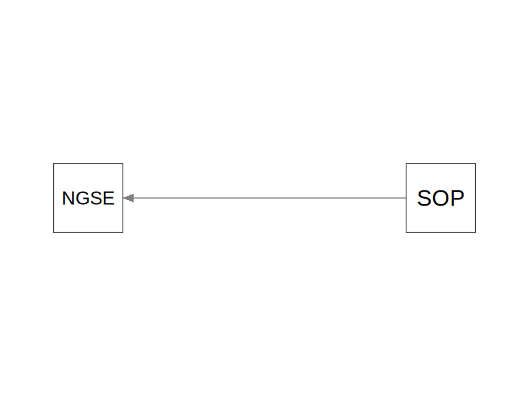
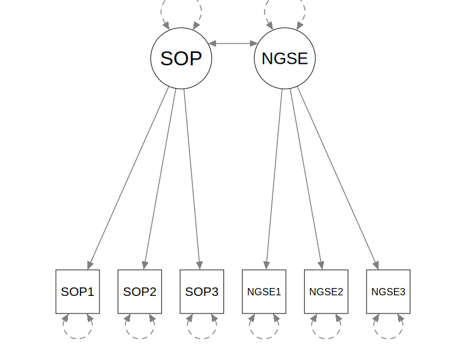
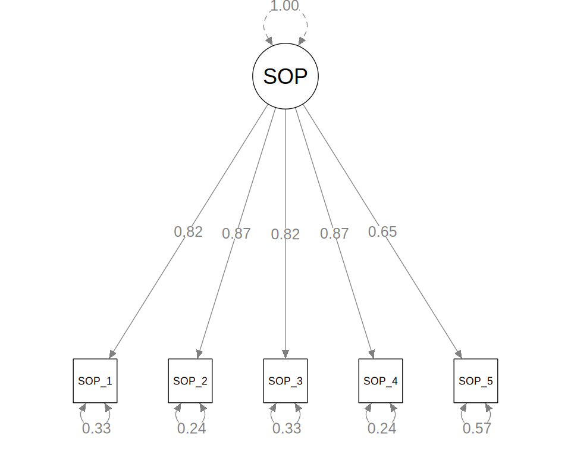
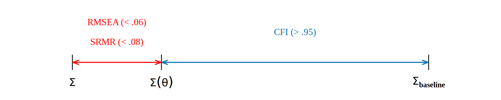

Confirmatory Factor Analysis
From Path Analysis to CFA
Recap: Path Analysis
- Path analysis models relationships among observed (measured) variables
- Assumes variables are measured without error
But in practice, psychological constructs are rarely measured perfectly:
- Self-oriented perfectionism (SOP) ≠ any single item
- Academic procrastination (PASS) ≠ any single item
What if our “X” variables are themselves imperfect measurements of an underlying construct?
Items of SOP
1 = “strongly disagree”, 5 = “strongly agree”
- I strive to be as perfect as possible.
- I have a strong need to be perfect.
- I never settle for less than perfection from myself.
- It is important to me to be perfect in everything I attempt.
- I do things perfectly, or I don’t do them at all.
Latent Variables
Path model (observed)
SOP and NGSE are treated as error-free
CFA model (latent)

Observed items are imperfect indicators of a latent factor
Usage of CFA
- “Confirm” that a set items reflects on the hypothesized number of factors
- Part of scale validation (e.g., evidence of internal structure, convergent/discriminant validity)
- Suggest directions for scale improvement
The Common Factor Model
The Common Factor Model
For item \(j\) and factor \(F\):
\[ Y_j = \lambda_j \eta + e_j \]
- \(\lambda_j\) = factor loading—how strongly item \(j\) reflects the factor
- \(\eta\) = latent factor (unobserved)
- \(e_j\) = unique error—item-specific variance + measurement error
- \(\text{Var}(e_j) = \theta_j\) is called the uniqueness
Communality vs. Uniqueness
\[ \underbrace{\lambda_j^2 \, \text{Var}(\eta)}_{\text{communality}} + \underbrace{\theta_j}_{\text{uniqueness}} = \text{Var}(Y_j) \]
Communality = proportion of item variance explained by the common factor
Common Factor Model
(Matrix form, Multiple Factors)
\[ \begin{bmatrix} Y_1 \\ Y_2 \\ \vdots \\ Y_p \end{bmatrix} = \begin{bmatrix} \lambda_{11} & \lambda_{12} & \cdots & \lambda_{1m} \\ \lambda_{21} & \lambda_{22} & \cdots & \lambda_{2m} \\ \vdots & \vdots & \ddots & \vdots \\ \lambda_{p1} & \lambda_{p2} & \cdots & \lambda_{pm} \end{bmatrix} \begin{bmatrix} \eta_1 \\ \eta_2 \\ \vdots \\ \eta_m \end{bmatrix} + \begin{bmatrix} e_1 \\ e_2 \\ \vdots \\ e_p \end{bmatrix} \]
\[ \mathbf{Y} = \mathbf{\Lambda} \boldsymbol{\eta} + \mathbf{e} \]
Cov(\(\boldsymbol{\eta}\)) = \(\boldsymbol{\Psi}_{m \times m}\)
Cov(\(\mathbf{e}\)) = \(\boldsymbol{\Theta}_{p \times p}\)
The CFA Model
Implied Covariance Structure
For \(p\) indicators of one factor \(\eta\):
\[ \boldsymbol{\Sigma} = \boldsymbol{\Lambda} \boldsymbol{\Psi} \boldsymbol{\Lambda}^\top + \boldsymbol{\Theta} \]
- \(\boldsymbol{\Lambda}\) (\(p \times 1\)): vector of factor loadings
- \(\boldsymbol{\Psi}\) (\(1 \times 1\)): factor variance
- \(\boldsymbol{\Theta}\) (\(p \times p\), diagonal): uniquenesses
Just like path analysis, we estimate model parameters from the covariance matrix of the observed items.
Steps of CFA
Adapted from Bollen (1989; 2026)
- Model specification
- Model identification
- Model estimation
- Test and evaluation
- Model modification/respecification
Same steps as path analysis—but step 4 is now more informative because \(df > 0\) gives us a global \(\chi^2\) test and approximate fit indices.
1. Specification
- Decide which indicators load on which factors
- Decide which cross-loadings or residual covariances to include (or exclude)
- CFA is confirmatory: the factor structure comes from theory, not data
CFA vs. EFA
In EFA, all factors load on all items, and rotation is used to find simple structure.
In CFA, the loading pattern is pre-specified—absence of an arrow is a strong zero constraint.
2. Model Identification
Can we uniquely determine all parameters from the observed covariance matrix?
- Number of unique elements: \(p^* = p(p+1)/2\)
- Free parameters:
- \(p\) loadings
- 1 factor variance
- \(p\) uniquenesses
- -1 for scaling constraint
Scaling the Latent Variable
Two common strategies for giving the latent variable a unit:
| Strategy | Constraint | Effect |
|---|---|---|
| Marker variable | Fix \(\lambda_1 = 1\) | Factor variance \(\psi\) is free |
| Standardized LV | Fix \(\psi = 1\) | All loadings free |
Note
We will use std.lv = TRUE—standardized latent variable. All loadings are freely estimated and directly interpretable as regression coefficients onto a standardized factor.
Number of Indicators
- With one factor, 3 items give a just-identified model
- Generally speaking, 4+ indicators per factor are recommended (e.g., Kline, 2023)
Note
Unlike the just-identified path model (\(df = 0\)), CFA models are typically overidentified. This enables a global model fit test.
3. Estimation
- (Approximately) continuous and normal indicators: Maximum Likelihood (ML)
- (Mildly) non-normal indicators or ordinal items with 5 categories: MLR
- Huber–White robust SEs
- Yuan–Bentler scaled \(\chi^2\)
- Ordinal indicators with 2-4 categories: Diagonally Weighted Least Squares (DWLS)
- Missing data: FIML (
missing = "FIML")—uses all available information
Using the lavaan Package
Model Specification
lavaan operators for CFA
SOP =~ SOP_1means “SOP manifests as SOP_1” (loading \(\lambda_1\))SOP_1 ~~ SOP_1means uniqueness \(\theta_1\) (estimated by default)SOP ~~ SOPis the factor variance, fixed to 1 bystd.lv = TRUE
Estimation Output
lavaan 0.6-21 ended normally after 17 iterations
Estimator ML
Optimization method NLMINB
Number of model parameters 10
Number of observations 575
Model Test User Model:
Standard Scaled
Test Statistic 68.758 45.706
Degrees of freedom 5 5
P-value (Chi-square) 0.000 0.000
Scaling correction factor 1.504
Yuan-Bentler correction (Mplus variant)
Model Test Baseline Model:
Test statistic 1868.666 1238.181
Degrees of freedom 10 10
P-value 0.000 0.000
Scaling correction factor 1.509
User Model versus Baseline Model:
Comparative Fit Index (CFI) 0.966 0.967
Tucker-Lewis Index (TLI) 0.931 0.934
Robust Comparative Fit Index (CFI) 0.967
Robust Tucker-Lewis Index (TLI) 0.934
Loglikelihood and Information Criteria:
Loglikelihood user model (H0) -3639.962 -3639.962
Scaling correction factor 1.034
for the MLR correction
Loglikelihood unrestricted model (H1) -3605.583 -3605.583
Scaling correction factor 1.191
for the MLR correction
Akaike (AIC) 7299.923 7299.923
Bayesian (BIC) 7343.467 7343.467
Sample-size adjusted Bayesian (SABIC) 7311.721 7311.721
Root Mean Square Error of Approximation:
RMSEA 0.149 0.119
90 Percent confidence interval - lower 0.119 0.094
90 Percent confidence interval - upper 0.181 0.146
P-value H_0: RMSEA <= 0.050 0.000 0.000
P-value H_0: RMSEA >= 0.080 1.000 0.994
Robust RMSEA 0.146
90 Percent confidence interval - lower 0.109
90 Percent confidence interval - upper 0.186
P-value H_0: Robust RMSEA <= 0.050 0.000
P-value H_0: Robust RMSEA >= 0.080 0.998
Standardized Root Mean Square Residual:
SRMR 0.032 0.032
Parameter Estimates:
Standard errors Sandwich
Information bread Observed
Observed information based on Hessian
Latent Variables:
Estimate Std.Err z-value P(>|z|) Std.lv Std.all
SOP =~
SOP_1 0.897 0.034 26.031 0.000 0.897 0.816
SOP_2 1.087 0.033 32.881 0.000 1.087 0.874
SOP_3 0.921 0.034 26.776 0.000 0.921 0.819
SOP_4 1.052 0.032 32.503 0.000 1.052 0.871
SOP_5 0.782 0.042 18.532 0.000 0.782 0.653
Variances:
Estimate Std.Err z-value P(>|z|) Std.lv Std.all
.SOP_1 0.405 0.032 12.713 0.000 0.405 0.335
.SOP_2 0.366 0.040 9.052 0.000 0.366 0.236
.SOP_3 0.415 0.038 10.900 0.000 0.415 0.328
.SOP_4 0.352 0.039 9.049 0.000 0.352 0.241
.SOP_5 0.824 0.052 15.898 0.000 0.824 0.574
SOP 1.000 1.000 1.000Standardized Loadings
fmt_apa <- function(x) gsub("^(-?)0\\.", "\\1.", sprintf("%.2f", x))
standardizedSolution(fit_1f) |>
dplyr::filter(op == "=~") |>
dplyr::select(
Item = rhs,
Est = est.std,
LL = ci.lower,
UL = ci.upper
) |>
tinytable::tt() |>
tinytable::format_tt(j = 2:4, fn = fmt_apa) |>
tinytable::style_tt(j = 2:4, align = "c")| Item | Est | LL | UL |
|---|---|---|---|
| SOP_1 | .82 | .78 | .85 |
| SOP_2 | .87 | .84 | .90 |
| SOP_3 | .82 | .78 | .86 |
| SOP_4 | .87 | .84 | .90 |
| SOP_5 | .65 | .60 | .71 |
Note
Quick rule of thumb: Values \(\geq .40\) are generally considered acceptable; \(\geq .60\) is good.
Path Diagram

4. Model Fit
- Global \(\chi^2\) test: can using 1 factor fully explain the covariance among items?
- \(H_0\): Specified model fits the data perfectly, \(\boldsymbol{\Sigma} = \boldsymbol{\Sigma}(\hat{\theta})\)
- Goodness-of-fit indices: how close is \(\boldsymbol{\Sigma}(\hat{\theta})\) to \(\boldsymbol{\Sigma}\)?
- Local fit: which item pairs are not well explained by the model?
- E.g., Correlation residuals (see note on CFA)
Approximate Fit Indices

cfi.robust tli.robust rmsea.robust
0.967 0.934 0.146
rmsea.ci.lower.robust rmsea.ci.upper.robust srmr
0.109 0.186 0.032 Warning
These cutoffs (Hu & Bentler, 1999) are guidelines, not golden rules. They were derived under specific simulation conditions and do not replace substantive judgment.
5. Model Respecification
Modification Indices (MI): Estimate how much \(\chi^2\) would decrease if a fixed parameter were freed:
lhs op rhs mi epc sepc.lv sepc.all sepc.nox
12 SOP_1 ~~ SOP_2 55.350 0.190 0.190 0.494 0.494
15 SOP_1 ~~ SOP_5 23.431 -0.137 -0.137 -0.238 -0.238
16 SOP_2 ~~ SOP_3 22.901 -0.125 -0.125 -0.321 -0.321
14 SOP_1 ~~ SOP_4 17.579 -0.104 -0.104 -0.276 -0.276
21 SOP_4 ~~ SOP_5 11.492 0.099 0.099 0.183 0.183
19 SOP_3 ~~ SOP_4 10.477 0.082 0.082 0.215 0.215
20 SOP_3 ~~ SOP_5 6.605 0.074 0.074 0.127 0.127Warning
Only modify the model when there is theoretical justification—post-hoc modifications capitalize on chance and should be cross-validated.
Reporting Sample
Self-oriented perfectionism was assessed with five items from the SOP scale (Williams & Edwards, 2021), rated on a 5-point Likert scale. We fit a unidimensional confirmatory factor analysis (CFA) model using the lavaan package (v0.6.21; Rosseel, 2012) in R. The latent factor variance was fixed to 1 for identification (std.lv = TRUE). To account for mild non-normality in the item responses, we used robust maximum likelihood estimation (MLR) with Yuan–Bentler scaled standard errors and a Satorra–Bentler scaled \(\chi^2\) test statistic. Missing data were handled with full information maximum likelihood (FIML). Model fit was evaluated using the robust CFI (\(\geq .95\)), robust RMSEA (\(\leq .06\)), and SRMR (\(\leq .08\); Hu & Bentler, 1999).
The hypothesized unidimensional CFA model showed acceptable fit to the data, robust \(\chi^2\)(5) = 45.71, \(p\) < .001, robust CFI = 0.967, robust RMSEA = 0.146, 90% CI [0.109, 0.186], SRMR = 0.032. Inspection of modification indices did not reveal any theoretically justified model modifications. All five items loaded significantly on the SOP factor, with standardized loadings ranging from 0.65 to 0.87.
Exercise
Run the R code in “note/data-exploration.R”, and then the code in “note/cfa.R” to fit a CFA model.
- Which item has the highest standardized loading?
Fit the following modified CFA model:
- How much did the fit improve in RMSEA and CFI?
- What was the standardized covariance between SOP_1 and SOP_2?